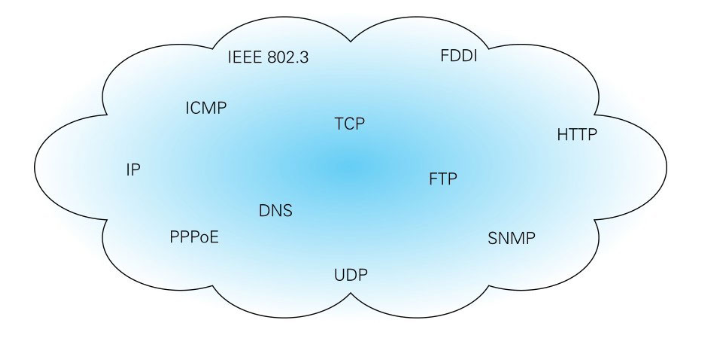
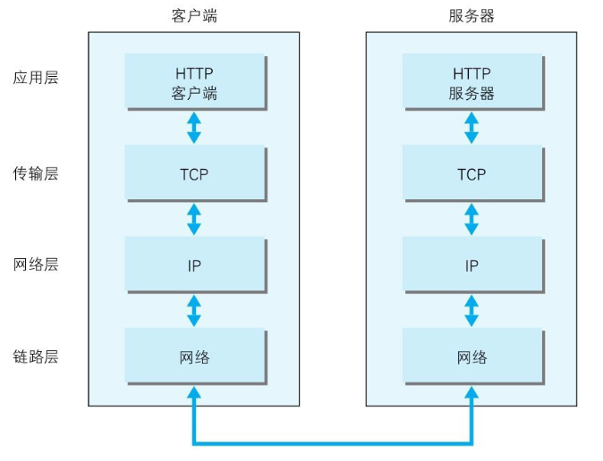
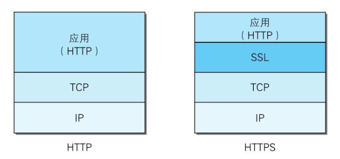
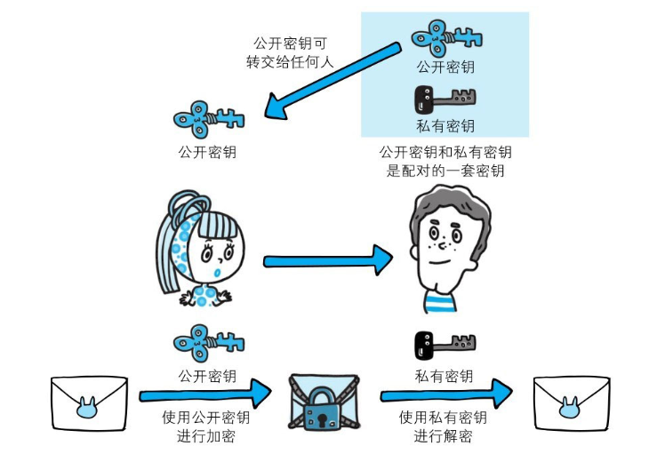
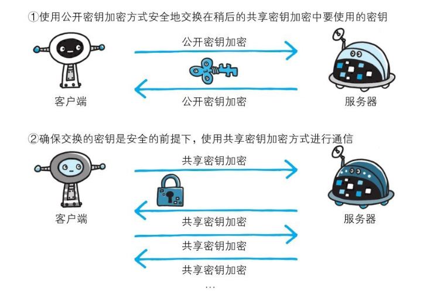
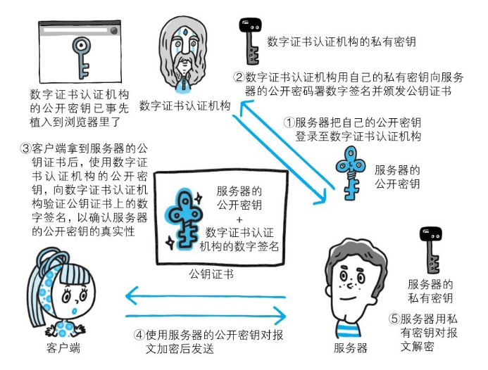
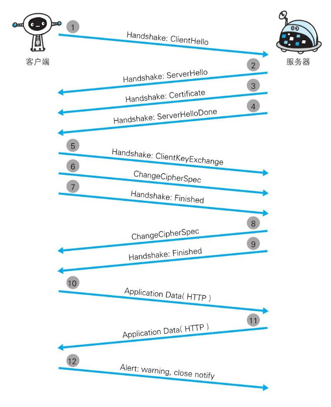

HTTP与HTTPS
HTTP
HTTP，全称HyperText Transfer Protocol，中文名称超文本传输协议，传统的web站点都是建立在HTTP协议基础上进行通信的，我们访问某些站点时，首先通过该协议传输生成网页的基础文件如.html、.css、.js等等，除此以外，还可以传输图片等其他格式文件。而这一切又需要建立在网络的基础上。通常使用的网络（包括互联网）是在TCP/IP协议族的基础上运作的，而HTTP属于TCP/IP协议族内部的一个子集。
TCP/IP
简单回顾一下计算机基础知识，何为TCP/IP协议族。计算机与网络设备进行相互通信，首先双方要基于同一种方法。比如，如何探测到通信目标、由哪一边先发起通信、使用哪种语言进行通信、怎样结束通信等规则都需要事先确定。不同的硬件、操作系统之间的通信，所有的这一切都需要一种规则。而我们就把这种规则称为协议（protocol）。

图1.TCP/IP是互联网相关的各类协议族的总称
协议中存在各式各样的内容。从电缆的规格到IP地址的选定方法、寻找异地用户的方法、双方建立通信的顺序，以及Web页面显示需要处理的步骤，等等。像这样把与互联网相关联的协议集合起来总称为TCP/IP。
TCP/IP协议族里重要的一点就是分层，从上到下分为应用层、传输层、网络层、链路层。各层的作用如下：
- 应用层 应用层决定了向用户提供应用服务时通信的活动。TCP/IP协议族内预存了各类通用的应用服务。比如，FTP（File Transfer Protocol，文件传输协议）和DNS（Domain Name System，域名系统）服务就是其中两类。最常见的HTTP协议也处于该层。
- 传输层 传输层对上层应用层，提供处于网络连接中的两台计算机之间的数据传输。在传输层有两个性质不同的协议：TCP（Transmission Control Protocol，传输控制协议）和UDP（User Data Protocol，用户数据报协议）。
- 网络层 网络层用来处理在网络上流动的数据包。数据包是网络传输的最小数据单位。该层规定了通过怎样的路径（所谓的传输路线）到达对方计算机，并把数据包传送给对方。与对方计算机之间通过多台计算机或网络设备进行传输时，网络层所起的作用就是在众多的选项内选择一条传输路线。
- 链路层 用来处理连接网络的硬件部分。包括控制操作系统、硬件的设备驱动、NIC（NetworkInterface Card，网络适配器，即网卡），及光纤等物理可见部分（还包括连接器等一切传输媒介）。硬件上的范畴均在链路层的作用范围之内。
TCP/IP通讯传输流动：

图2.TCP/IP通讯传输流动
无论时从服务器发起通讯还是从客户端发起通讯都必须遵循以上的数据流动原则：假如从客户端发起通讯，数据则从应用层->传输层->网络层->链路层->链路层->网络层->传输层->应用层这样传输，并且每向下经过一层便会封装包裹该层的首部信息，每向上一层消去该层的首部信息，层层校验防止出错。
HTTP存在的问题
HTTP本身是比较简单方便的协议，而简单协议带来的缺点就是安全问题，主要是以下三点：
- 通信使用明文（不加密），内容可能会被窃听。由于HTTP本身不具备加密的功能，所以也无法做到对通信整体进行加密。即，HTTP报文使用明文方式发送。
- 不验证通信方的身份，因此有可能遭遇伪装。HTTP协议中的请求和响应不会对通信方进行确认。也就是说存在“服务器是否就是发送请求中URI真正指定的主机，返回的响应是否真的返回到实际提出请求的客户端”等类似问题。
- 无法证明报文的完整性，所以有可能已遭篡改。在报文的传输过程中，必须经过物理介质传输（量子通信除外），就无法避免被外界篡改的可能。由于HTTP协议无法证明通信的报文完整性，因此，在请求或响应送出之后直到对方接收之前的这段时间内，即使请求或响应的内容遭到篡改，也没有办法获悉。虽然有部分办法能够确定报文完整性的方，但事实上不完全可靠，其中常用的是MD5和SHA-1等散列值校验的方法，以及用来确认文件的数字签名方法，但是有谁又能保证MD5、SHA-1计算得到的散列值不被中途篡改呢。
HTTP+加密+认证+完整性保护=HTTPS
为了统一解决上述这些问题，需要在HTTP上再加入加密处理和认证等机制。人们把添加了加密及认证机制的HTTP称为HTTPS（HTTP Secure）。HTTPS并非是新的协议，而是身披SSL外壳的HTTP，只是把HTTP通信接口部分用SSL（Secure Socket Layer）和TLS（Transport Layer Security，TSL是以SSL为原型开发的协议，有时会统一称该协议为SSL。）协议代替而已。所以从层级间通信来说，就由HTTP直接和TCP通信演变为HTTP直接与SSL通信，再由SSL与TCP通信而已。

图3.HTTP与HTTPS
加入了SSL协议之后，HTTP就有了加密、认证和完整性保护这些功能。SSL协议是独立的协议，不仅HTTP可以使用，其他运行在应用层的FTP、SMTP和Telnet等协议均可配合SSL协议使用。
SSL协议采用一种叫做公开密钥加密的加密处理方式。近代的加密方法中加密算法是公开的，而密钥却是保密的。通过这种方式得以保持加密方法的安全性。加密和解密都会用到密钥。没有密钥就无法对密码解密，反过来说，任何人只要持有密钥就能解密了。如果密钥被攻击者获得，那加密也就失去了意义。
通常密钥的形式有两种，对称密钥和非对称密钥。对称密钥又称为共享密钥，是指加密和解密都公用一把密钥的加密方式。既然是共用密钥，那么就必须由一方生成，共享给另一方，共享就不可避免的要在网络上传输，在网络上传输就无法保证密钥不会被窃取，无法保证密钥不被窃取就相当于无法保证加密的完全安全性。而非对称密钥就很好的解决了这个问题，非对称密钥又称为公开密钥加密，由一把公开密钥和私有密钥组成，公开密钥可以随意公开，任何人都可以获得。使用公开密钥加密的方式，发送密文的发送方使用接收方的公开密钥进行加密，接收方接收到密文后，使用私有密钥进行解锁。这样一来，就可以避免私有密钥的网络传输，不被窃取。单独靠公开密钥和密文解密是非常难，解密过程就是在对离散对数进行求值，这并非轻而易举就能办到。

图4.非对称加密
HTTPS采用混合加密方式，先是通过公开密钥加密的方式交换共享加密的密钥，把密钥安全地共享给对方。之后的通信就通过共享加密进行密文通信，这样做优势在于能充分发挥两种加密方式的优点：公开加密没有传输层面被窃取的可能、共享加密消耗的资源比公开加密要低。

图5.混合加密机制
数字证书
虽然共享加密方式的安全性得到了保证，但是如何保证公开加密的安全性？怎么保证接收到的公开加密公有密钥是货真价实的密钥，不被掉包呢？为了解决这个问题，人们提出了数字证书这一概念。在使用HTTPS协议前，服务器运营人员先向数字证书认证机构（CA,Certificate Authority）和其相关机关申请公开密钥证书，认证机构在接收到申请并判明申请者身份后，会对已申请的公开密钥做数字签名，然后分配这个已签名的公开密钥，并将该公开密钥放入公钥证书后绑定在一起发送给申请者，申请者即运营人员将其布置进服务器中。当有人访问该服务器时，服务器首先把公钥证书以公开加密方式发送至客户端，客户端接收到公钥证书后使用与之绑定的公钥密钥，对证书上的数字签名进行验证，一旦验证通过即说明该证书是准确、安全和值得信赖的。但是怎么把证书安全地转交给运营人员又成了一个问题，因此多数浏览器厂商在开发浏览器时，会首先把常用认证机构的公有密钥预先植入，这样申请者申请证书时安全性便得到保证。

图6.公钥证书认证及其使用
证书除了能判明服务器是否安全，还能用来确认运行服务器背后的公司是否是合法合规、真实存在的。拥有这个特性的证书就是EV SSL证书（Extended Validation SSLCertificate）。EV SSL证书是基于国际标准的认证指导方针颁发的证书。其严格规定了对运营组织是否真实的确认方针，因此，通过认证的Web网站能够获得更高的认可度。持有该证书的WEB网站一般在地址栏有一些显眼的标志，例如地址栏是绿色的或者有个锁头一样的标志。
不但服务器能拥有数字证书，客户端同样能，其获取方式与服务器证书如出一辙。但是，客户端证书的获取需要支付一定的费用，所以一般情况下比较少用。
除了上述具有公信力的认证证书，还有一种自签名证书，这种证书通常有自由认证机构颁发，不过在互联网上无法使用，不具备公信力。如果你想自由生成证书，则OpenSSL这套开源程序能够帮助你。
HTTPS的通讯机制

图7.HTTPS的安全通信机制
步骤1： 客户端通过发送Client Hello报文开始SSL通信。报文中包含客户端支持的SSL的指定版本、加密组件（Cipher Suite）列表（所使用的加密算法及密钥长度等）。
步骤2： 服务器可进行SSL通信时，会以Server Hello报文作为应答。和客户端一样，在报文中包含SSL版本以及加密组件。服务器的加密组件内容是从接收到的客户端加密组件内筛选出来的。
步骤3： 之后服务器发送Certificate报文。报文中包含公开密钥证书。
步骤4： 最后服务器发送Server Hello Done报文通知客户端，最初阶段的SSL握手协商部分结束。
步骤5: SSL第一次握手结束之后，客户端以Client Key Exchange报文作为回应。报文中包含通信加密中使用的一种被称为Pre-master secret的随机密码串。该报文已用步骤3中的公开密钥进行加密。
步骤6： 接着客户端继续发送Change Cipher Spec报文。该报文会提示服务器，在此报文之后的通信会采用Pre-master secret密钥加密。
步骤7： 客户端发送Finished报文。该报文包含连接至今全部报文的整体校验值。这次握手协商是否能够成功，要以服务器是否能够正确解密该报文作为判定标准。
步骤8： 服务器同样发送Change Cipher Spec报文。
步骤9： 服务器同样发送Finished报文。
步骤10： 服务器和客户端的Finished报文交换完毕之后，SSL连接就算建立完成。当然，通信会受到SSL的保护。从此处开始进行应用层协议的通信，即发送HTTP请求。
步骤11： 应用层协议通信，即发送HTTP响应。步骤12： 最后由客户端断开连接。断开连接时，发送close_notify报文。上图做了一些省略，这步之后再发送TCP FIN报文来关闭与TCP的通信。
在以上流程中，应用层发送数据时会附加一种叫做MAC（Message Authentication Code）的报文摘要。MAC能够查知报文是否遭到篡改，从而保护报文的完整性。
HTTPS的一些缺点
HTTPS固然能大幅提升安全性，但是带来的代价便是资源的消耗，运行算法加密和解密需要一定的CPU运算力和内存，访问量越大的网站需要付出的硬件资源越大。一般来说，只会在传输重要信息时才使用HTTPS协议，例如用户账号密码、银行卡号密码等等，而其它时候直接使用HTTP协议进行通信，这样就能在尽可能保证服务器资源合理的情况下保证信息安全。